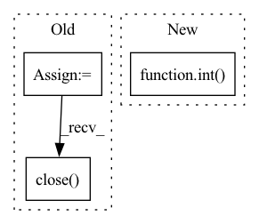

Pattern ID :10426
Before Change
st, en = self._check_length(st, en)
attrs = check_attributes(dynamic_attributes, self.dynamic_attributes)
nc = netCDF4.Dataset(os.path.join(self.ds_dir, f"HYSETS_2020_{self.source}.nc"))
stn_df = pd.DataFrame(columns=attrs)
for var in nc.variables:
if var in attrs:
ma = np.array(nc[var][:])
ma[ma == nc[var]._FillValue] = np.nan
ta = ma[station, :] // target array of on station
s = pd.Series(ta, index=pd.date_range(self.start, self.end, freq="D"), name=var)
stn_df[var] = s[st:en]
nc.close()
return
def fetch_static_attributes(self,After Change
en=None,
to_dataframe=False):
Fetches dynamic attributes of one station.
station = [int( station) ]
return self._fetch_dynamic_attributes(stations=station,
dynamic_attributes=dynamic_attributes,
st=st,In pattern: SUPERPATTERN
Frequency: 4
Non-data size: 3
Instances Fragment ID: 36425753
Project Name: atrcheema/ai4water
Commit Name: 518f536a9edfbd2de387303c829d38a8757ee33e
Time: 2021-06-15
Author: ather_abbas786@yahoo.com
File Name: AI4Water/utils/datasets/camels.py
M Class Name: HYSETS
N Class Name: HYSETS
M Method Name: fetch_dynamic_attributes(6)
N Method Name: fetch_dynamic_attributes(5)
M Parent Class: Camels
N Parent Class: Camels
M File Name: AI4Water/utils/datasets/camels.py
N File Name: AI4Water/utils/datasets/camels.py
M Start Line: 459
M End Line: 475
N Start Line: 648
N End Line: 653
Before Change
audio_data = b"".join(frames)
if save_path is not None:
os.makedirs(os.path.dirname(save_path), exist_ok=True)
wf = wave.open(save_path, "wb")
wf.setnchannels(self.channels)
wf.setsampwidth(self.p.get_sample_size(self.format))
wf.setframerate(self.rate)
wf.writeframes(b"".join(frames))
wf.close()
return audio_data
def close(self):
self.stream.close()After Change
:return: 音频的numpy数据
print("开始录音......")
num_frames = int( record_seconds * self.sample_rate)
data = self.default_mic.record(samplerate=self.sample_rate, numframes=num_frames, channels=self.channels)
audio_data = data.squeeze()
print("录音已结束!")
if save_path is not None: Fragment ID: 36425752
Project Name: yeyupiaoling/voiceprintrecognition-pytorch
Commit Name: 5c4517b82c3634a6908e35f143fb908e35fd71d8
Time: 2023-03-23
Author: yeyupiaoling@foxmail.com
File Name: mvector/utils/record.py
M Class Name: RecordAudio
N Class Name: RecordAudio
M Method Name: record(3)
N Method Name: record(3)
M Parent Class:
N Parent Class:
M File Name: mvector/utils/record.py
N File Name: mvector/utils/record.py
M Start Line: 31
M End Line: 45
N Start Line: 24
N End Line: 30
Before Change
audio_data = b"".join(frames)
if save_path is not None:
os.makedirs(os.path.dirname(save_path), exist_ok=True)
wf = wave.open(save_path, "wb")
wf.setnchannels(self.channels)
wf.setsampwidth(self.p.get_sample_size(self.format))
wf.setframerate(self.rate)
wf.writeframes(b"".join(frames))
wf.close()
return audio_data
def close(self):
self.stream.close()After Change
:return: 音频的numpy数据
print("开始录音......")
num_frames = int( record_seconds * self.sample_rate)
data = self.default_mic.record(samplerate=self.sample_rate, numframes=num_frames, channels=self.channels)
audio_data = data.squeeze()
print("录音已结束!")
if save_path is not None: Fragment ID: 36425750
Project Name: yeyupiaoling/audioclassification-pytorch
Commit Name: 4e40d2876f4e146adf88a406af712366ff36d830
Time: 2023-03-23
Author: yeyupiaoling@foxmail.com
File Name: macls/utils/record.py
M Class Name: RecordAudio
N Class Name: RecordAudio
M Method Name: record(3)
N Method Name: record(3)
M Parent Class:
N Parent Class:
M File Name: macls/utils/record.py
N File Name: macls/utils/record.py
M Start Line: 31
M End Line: 45
N Start Line: 24
N End Line: 30